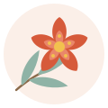

健康 · 新南威尔士州
和家人准备一份跌倒应对表
活动已结束。可向主办方查询下期安排。
下载一页中文表格，预先写下跌倒后可以联系谁。
怎么办理
原文为一页可打印的计划表。可填写后放在家人都知道的位置。
资料语言：简体中文。点开原文可放大阅读或打印。

健康 · 新南威尔士州
活动已结束。可向主办方查询下期安排。
下载一页中文表格，预先写下跌倒后可以联系谁。
原文为一页可打印的计划表。可填写后放在家人都知道的位置。
资料语言：简体中文。点开原文可放大阅读或打印。